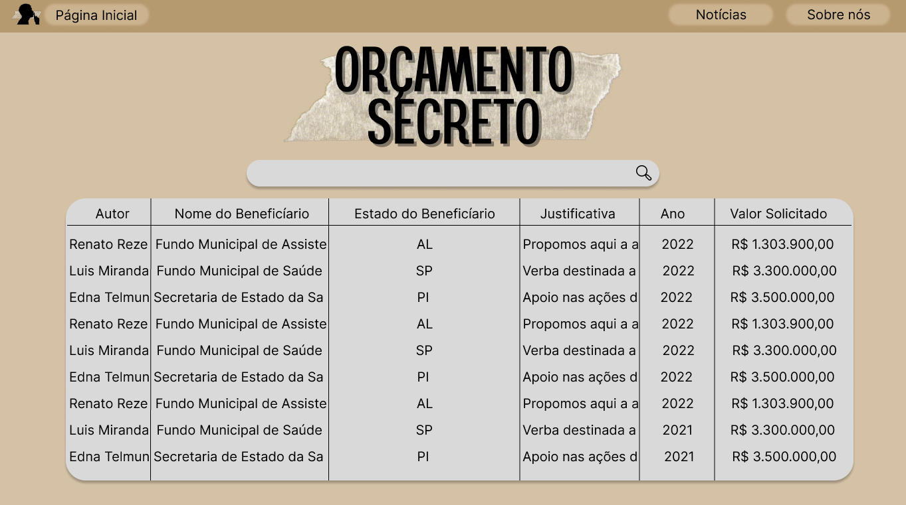
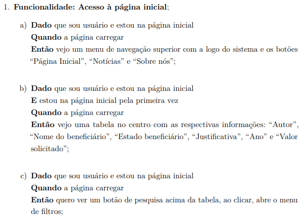
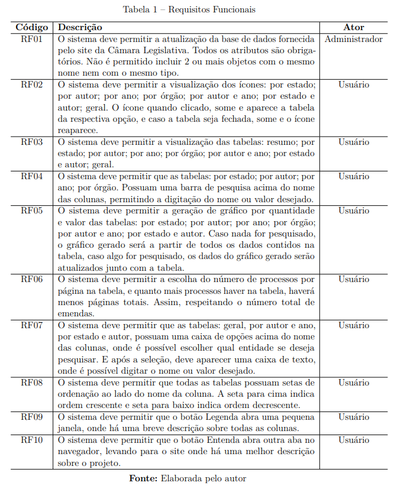

No mês de abril, algumas coisas foram redefinidas no projeto, como o protótipo e os requisitos funcionais.
No primeiro semestre definimos nosso projeto para mostrar apenas uma tabela com todos os dados como pode ser visto abaixo:
No decorrer do mês, vimos que não seria uma forma eficaz e intuitiva de mostrar os dados.
Então, juntamente com a professora, tivemos a ideia de fazer diversas tabelas, mas cada uma com foco em algo, como: apenas autor ou autores por estado.
Assim o protótipo foi corrigido. Já os requisitos funcionais mudaram completamente, eles podem ser vistos e comparados nas imagens abaixo:
Requisitos atualmente:
